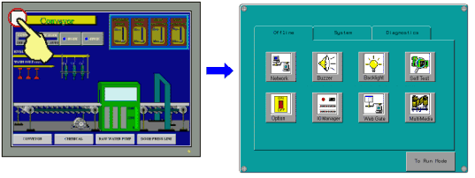
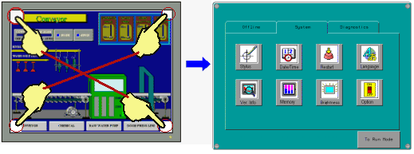
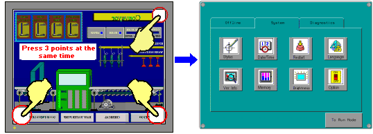

|
|
|
|
|
|
|
|
You can display the Runtime Configuration Menu using these methods:
Click the top-left corner of the panel
Press two points on the screen in order
Press three points at the same time
Use the configuration switch.
See Appendix 5, Hardware Specifications, for a list of the targets that these methods for displaying the Runtime Configuration Menu.
Display the Runtime Configuration Menu by following the steps below. The touch area for this method is 20 pixels high by 20 pixels wide.

This method is not available the first time you download a new project and start the target.
Not all targets support this method. For more information see Appendix 5, Hardware Specifications.
In the Target properties, set ToConfiguration to Top Left Corner.
After downloading to the target machine, start up Vijeo Designer Runtime by plugging in the target machine.
Within ten seconds of the user application starting up, touch the top-left corner to display the configuration menu.

For XBTGT2000 Series and higher, in the target's ToConfiguration property, select either 2 Corners or Top Left / 2 Corner to display the configuration menu using the 2-corner touch method. Press two diagonal corners on the screen within half a second of each other and in sequence—either the top-left then the bottom-right corners, or the top-right then the bottom-left corners. The corner touch areas are 50 pixels high by 50 pixels wide. The configuration menu can display while Vijeo Designer Runtime is in operation.

Not all targets support this method. For more information see Appendix 5, Hardware Specifications.

In the target's ToConfiguration property, select either 3 Corner or Top Left / 3 Corner to display the configuration menu using the 3-corner touch method. Press three corners on the screen at the same time to enter the configuration menu. Simultaneously press the top-right, bottom-left, and bottom-right corners. The corner touch areas are 50 pixels high by 50 pixels wide. The configuration menu can display while Vijeo-Designer Runtime is in operation.

Not all targets support this method. For more information see Appendix 5, Hardware Specifications.

You can display the runtime configuration menu by creating a switch and configuring touch animation properties. For more information see Section 9.2, Creating Switches.
The following table describes the Vijeo-Designer Runtime reboot timing in the Vijeo-Designer Runtime Configuration Menu's Offline and System tabs.
|
Displaying Vijeo-Designer Runtime Configuration Menu |
When you change Vijeo-Designer Runtime Configuration menu |
When you change Offline tab settings |
When you change System tab settings |
|
Touch top-left corner |
User application stops running. |
User application stops running. Touch the To Run Mode button to restart. |
|
|
User-created Switch |
User application continues to run. |
Confirmation message displays. Click OK to stop the user application, or Cancel to return to the application. |
User application continues to run. |
|
Touch two corners |
|||
|
Touch three corners |
|||
The following occurs when the user application exits:
The values of internal variables are reset.
The display returns to the initial panel.
While the user application is stopped, no historical data is recorded.
If the alarm is set up to not back up its database (as defined by the user), when Vijeo-Designer Runtime restarts, the active alarm, log, and history alarms are not restored.